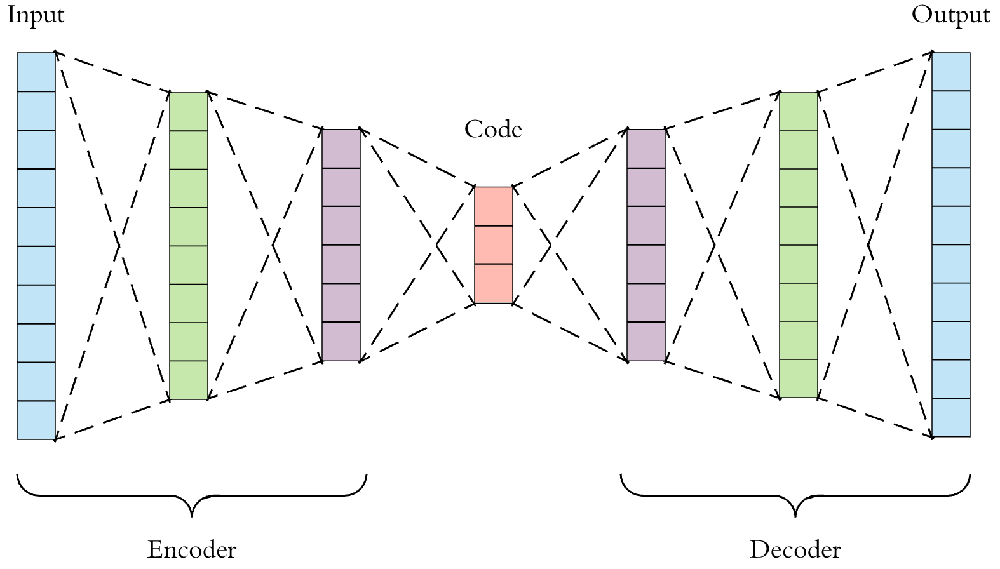

Cells are the basic building blocks of life, thus they are important to how our bodies function. Inside all of our cells are three different forms, or modalities, of genetic information: DNA, mRNA, and proteins. Genes are made up of DNA and every single cell in the human body possesses the same genes. Cells can activate certain parts of the gene to produce specific proteins, allowing the cells in the body to specialize despite drawing from the same set of instructions. These proteins then go on to perform important biological tasks for each cell,
allowing living organisms to function.
Our Contribution
In this paper, we propose and utilize a neutral network framework called an coupled autoencoder to handle this cross-modality prediction problem. The coupled autoencoder builds upon the functionality of a single autoencoder, enabling both the reconstruction between and within modalities. A byproduct of this framework is that there is a common embedding, shared by both inputs, which allows us to align both modalities to the same space after encoding. Our goal is to predict one modality from another, from RNA data to protein and from protein to RNA. We implement this autoencoder in our project and find that it is able to perform decently at both clustering the cell types in the latent space, as well as cross-modal prediction. We try to improve this model with further supervision by adding additional loss functions for training and adding a scale factor for the model to learn to reconstruct the data, as we transformed one modality specifically before inputting it into the model. We find that the autoencoder performs quite adequately for RNA to ADT prediction, although further improvements could be made.
Methods
Problem Set Up
filler words
Coupled Autoencoder
To accomplish our task, we will be using a coupled autoencoder model, which utilizes a type of neural network called an autoencoder. An autoencoder consists of three, necessary layers: the encoder layer, the code (latent space), and the decoder layers. Encoding layers are often put between the input and the code, and decoding layers are put between the latent space and the output layers. As the data passes between layers in the encoding portion of the autoencoder, it undergoes dimensionality reduction, which will help us denoise the data to find the components of it that encode the most information. The decoding layers will then take the compressed version of the data in the code and reconstruct it layer by layer as the data travels back to the output layer. A single autoencoder model framework is shown below.
Single Autoencoder Framework

Autoencoders can be connected to share the same latent space, such that they can learn to reconstruct one set of input data from another. We can perform this linkage with our coupled autoencoder, and we can see that both the data for GEX and ADT are aligned. Thus a coupled autoencoder model will be able to predict ADT data from GEX and GEX data from ADT. In order to improve the coupled autoencoder’s predictions, we will need to optimize the architecture as well as add supervision in both the latent space and the outputs.
Coupled Autoencoder FrameworkThis figure is a coupled autoencoder framework. It contains 2 encoders which reduce the dimensions of both input modalities down to the latent space which then makes it possible to perform cross modality prediction through its 2 decoder layers.
To add supervision in the latent space, we implemented two loss functions. The first loss function is pairwise distance loss functions. We define the pairwise loss function as:
We denote the encoder and decoder layers of the model by Ei and Ej, Di and Dj for GEX and ADT respectively. In addition, we denote the original data as Xi,Xj for GEX and ADT respectively. Z(X) calculates the p-norm distance between each point in the data and is defined as the following, where X is defined as the given matrix for the data. Z(X) is defined as:
While we cannot directly calculate the loss of a cell in the input space and its representation in the embedded space, due to the dimensionality reduction aspect of the autoencoder, we instead attempt to preserve the distance between given cells in the input space and those corresponding cells in the latent space as a workaround. This is the goal of our pairwise distance, where we calculate the summation of all of the differences between the pairwise distance of two given cells in the input space and in the embedding. This loss function is then normalized by how many pairwise distance calculations were made in the summation. The goal of our Pairwise Distance loss is to preserve the distance among the points between the original space, and the embedding in the lower dimensions after the encoding, which would result in the same clusters of cells inherently present in the input space to also be maintained in the embedded space.
Our next loss inside the latent space is Alignment Loss. Since the latent space is shared between the two modalities, we want the embeddings in the latent space to be the same in terms of both position and general clustering patterns. Thus, this loss will be calculated as the mean squared error between the two embeddings, i.e. the mean squared error between the embedding of the GEX data and the ADT data. It is defined as:
To add supervision in the model's outputs, we want to calculate the losses of the same modality reconstruction. The loss for same modality reconstruction is defined as:
We also want the model to calculate losses for cross modality prediction. This is defined as:
Preprocessing of GEX data
The GEX data contains points where certain columns have extremely high values. In the interest of clustering the data by their cell types, those cells can be interpreted as having much further distances from other clusters of cells. This causes the encoder of the model to not accurately cluster up the cell types in lower dimensions because these distant points are dominating. An option to alleviate this issue could be to remove outliers, or to set a maximum value for these distances, but these extreme values may be important to the identity of those cells. Our solution is to log transform and then normalize the data. This allows the data to reduce the large distances from these far points while preserving the distribution of the points in order to be able to cluster up the different cell types accurately in lower dimensions.
Modifications to Coupled Autoencoder
Because of the log and normalization terms we must modify the coupled autoencoder framework in order to undo the log and normalization. To undo the log, we must apply an inverse log function in order to bring the data back to its original form.
To undo the normalization however takes more work. Predicting the GEX from ADT raises some challenges. To undo normalization, it requires a scale factor from the original data. Predicting GEX from ADT data does not give the model the scale factors it requires to undo the normalization as it is not the original GEX data. Thus we must train the coupled autoencoder model to learn this scale factor by adding an extra dimension to the final output of the model. With GEX data being in R^D, the final output of the model prediction will be in R^D+1 (will fix format on the final website). The D+1 dimension will then be extracted and multiplied to the first D dimension in order to output the original data. Thus we allow the model to learn the scale factor on its own to bring its predicted GEX data back to its original form.
Local distance preservation (tentative)
Results
Data and set up
Coupled autoencoder results
Below We attempt our task with a barebones coupled autoencoder to get a basis for how well the neural network is able to perform without further supervision and improvements. The dimensions of the latent space are confined to 2 for the purpose of visualizing the embedded clustering of cell types. It is very likely that the dimensions for the latent space of an autoencoder optimized for the prediction task may be larger than 2 or 3, and will be harder to visualize.
Coupled Autoencoder GEX Cell Type Clusters in Latent Space
Coupled Autoencoder ADT Cell Type Clusters in Latent Space
Fig 3.Above we see cell types clusters in the latent space specified with different colors. The two modalities are aligned, as shown with the same types clustered in the same area on the graph.
PCA GEX Cell Type Clusters
PCA ADT Cell Type Clusters
Fig 4.Above PCA for ADT does not show many cell clusters while GEX shows even less. On top of this, the two embeddings are not aligned.
ISOMAP GEX Cell Type Clusters
ISOMAP ADT Cell Type Clusters
Fig 5.Above ISOMAPS for ADT and GEX do not cluster well. On top of this, the two embeddings are not aligned.
TSNE GEX Cell Type Clusters
TSNE ADT Cell Type Clusters
Fig 6.Above TSNE clusters cell types for both GEX and ADT well, but does not align very well. This is shown by different clusters or colors in different distributions between the two graphs
Fig 5.a. A heatmap to visualize the autoencoder’s ability to preserve the distances in the original space in the latent space. The tick values for the y-axis are not the actual values (actual scale is [0, 290.6882]) for the range of pairwise distances in the latent space, but it is scaled to the same values as the ones in the original space for easier visualization. b. A similar heatmap, but for the embedding of the ADT data (actual scale is [0, 5.183]).
Improvements
In the earlier visualization of the latent space, we brought the number of dimensions to 2 for easy visualization purposes. For the final model we want to find the optimal number of dimensions in the latent space to give more space for the embedding.
Latent Space Dimension Size
Latent Space Dimension Size
Fig 6. a. A line plot of the RMSE for cross-modal predictions against varying dimensions that the latent space is set to for the prediction task of GEX to ADT. b. The same graph, but for the task of ADT to GEX instead.
Further research
There are some suggestions in order to improve on our model. First off is the implementation of a K Nearest Neighbor Loss. Due to the large distances of certain points from the other points in the GEX data, a k-NN loss may assist in preserving distances between points and its neighbors (within clusters) while ignoring distant points. However, while we have tried to implement a k-NN approach to preserving distances, we were unable to do so in a way which the autoencoder would be able to efficiently compute the nearest neighbors within each training batch, resulting in the runtime being unfeasibly long. Even with a low number of neighbors, such as 3 or 5, it would take a while for the autoencoder to finish training a single epoch.
Currently we are working with cross modality between GEX or mRNA and ADT or Protein data. Further research can be done on the ATAC data, or the DNA modality. Moving forward with this model, cross modality prediction can be performed between GEX and ATAC data.
In addition to cross modality prediction, modality matching is another task to further this research. The goal of modality matching is to determine the correspondence between single cell profiles. This is different from modality prediction as the output of this task will provide the distribution of probabilities of its predictions which will then return the sum of the weights of its correct match.
The last task for further research is to implement joint embedding from multiple modalities. This task will focus on learning the embedded space between multiple modalities, similar to the cell clusters in the latent space but in higher dimensions. The metrics will focus on alignment, cell cycle preservation and label conservation.
Conclusion
References
Czi. “About Multimodal Single-Cell Data.” Open Problems in Single Cell Analysis, 21 Oct. 2021, https://openproblems.bio/neurips_docs/data/about_multimodal/.